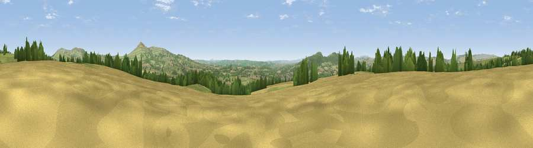

Viewpoint near Middleton
#9758 in England · top 24% of its area beats it · near MiddletonWhere it is
The exact computed spot (SO 52250 78588). Click the marker for map links.
The view, rendered

A 360° render of this exact spot computed from the terrain model, tree cover and land cover — summer colours, afternoon light, calibrated against photographs of famous viewpoints. Real trees, hedges and buildings will differ in detail.
The panorama
Grey silhouette: terrain skyline in each direction (720 bearings, Earth curvature and refraction included). Dashed green: skyline with trees (+15 m) and buildings (+8 m) as obstacles. Blue strip: how far the ground is visible on each bearing.
Where the view opens
Wedge length = distance to the farthest visible ground on that bearing (vegetation-aware). Rings at 10, 25 and 50 km.
What fills the view
47% grassland · 30% cropland · 20% woodland · 2% built-up
Angular shares of the visible panorama (visual magnitude), not map area. Landscape diversity 0.49 (0–1 Shannon).
Key numbers
More beautiful places nearby
The staircase of upgrades: each row has a higher view potential than everything closer. Driving times are estimates from straight-line distance, calibrated against real road routing — check an actual route before setting out.
| Place | Direction | Drive | Score |
|---|---|---|---|
| Viewpoint near Stanton Lacy | WSW · 1 km | ~3 min | 63.8 |
| Viewpoint near Stanton Lacy | NW · 2 km | ~6 min | 64.0 |
| Viewpoint near Stoke St Milborough | NE · 5 km | ~11 min | 70.1 |
| Titterstone Clee | E · 7 km | ~14 min | 83.8 |
| The Lawley | N · 19 km | ~33 min | 85.8 |
| Viewpoint near Little Wenlock | NNE · 31 km | ~48 min | 86.6 |
| North Hill | SE · 41 km | ~60 min | 86.8 |
| Worcestershire Beacon | SE · 41 km | ~61 min | 87.1 |
52.40320, -2.70328 · source: screening · position refined by local search. Computed location — check access rights before visiting.